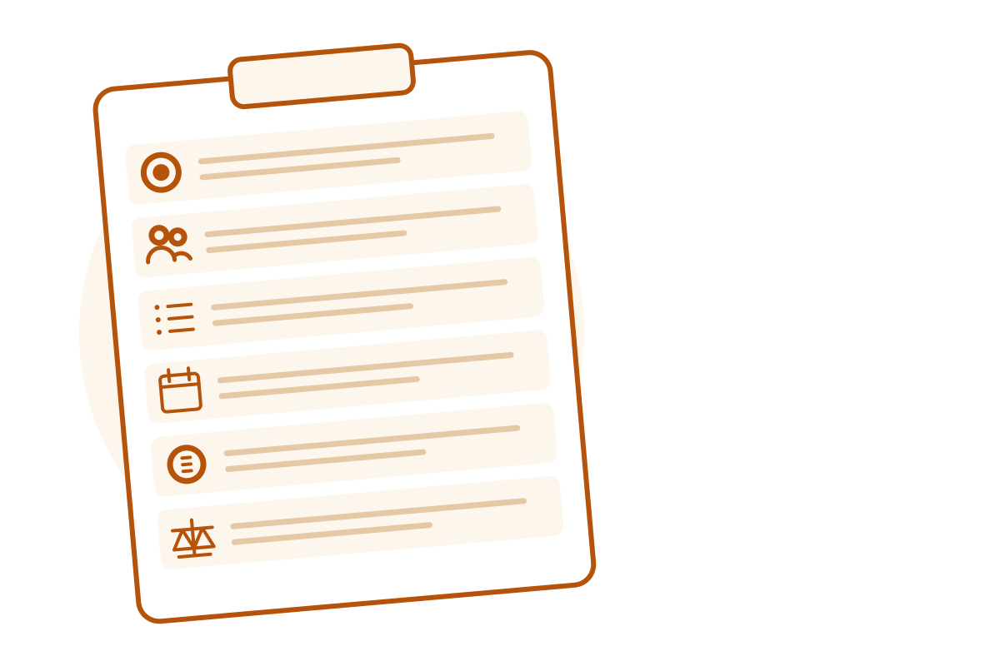

Cornerstone · Templates
Freelance hiring brief template
A good brief lowers price noise and revision loops. Paste this into your job post, Gig request, or email. Delete sections that do not apply.

- Goal
- Audience
- Deliverables
- Deadline
- Budget
- Acceptance criteria
1. Snapshot
- Working title:
- Company / project:
- Primary contact + timezone:
- Hard deadline:
- Budget range or fixed bid: (state currency)
- Decision makers: who must approve
2. Goal
In 2–4 sentences: what success looks like for the business, not just the file deliverable.
3. Audience and context
- Who is the end user?
- Where will this be used?
- What exists today (links, brand kit, competitors)?
4. Deliverables (definition of done)
- Exact outputs (pages, screens, files, word counts, formats).
- What is out of scope.
- Licensing / IP expectations (work made for hire, portfolio rights, third-party assets).
5. Constraints
- Brand rules, accessibility targets, tech stack, languages.
- Tools the freelancer must use (or must not use).
- Compliance or confidentiality needs (NDA separately if required).
6. Milestones and review
| Milestone | Deliverable | Amount | Review window |
|---|---|---|---|
| 1 | Discovery / concepts | e.g. 48–72h | |
| 2 | Draft / prototype | ||
| 3 | Final files |
Fund milestone 1 before work starts. See how escrow and milestones work.
7. Revisions
- Included revision rounds:
- What counts as a revision vs. new scope:
- How feedback will be collected (one consolidated note per round):
8. Communication
- Primary channel (prefer the platform’s thread if you want platform protection).
- Response-time expectations on both sides.
- What happens if someone goes silent (point to platform rules or written silence defaults).
9. Risks and dependencies
- Assets you still owe the freelancer:
- Third parties who can block progress:
10. Proposal request
Ask freelancers to reply with: relevant work samples, assumed scope boundaries, proposed milestone split, questions, and earliest start date. Reward clear questions — they predict clearer delivery.
Pair this with venue choice. For logo-specific venue fitting, see Where to hire a logo designer. For total fees, see the Platforms fee comparison.